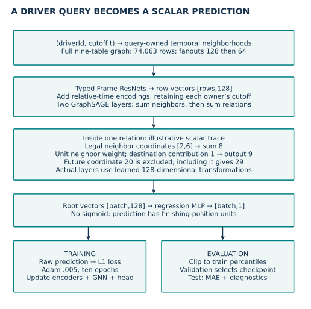
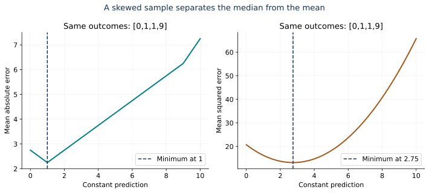
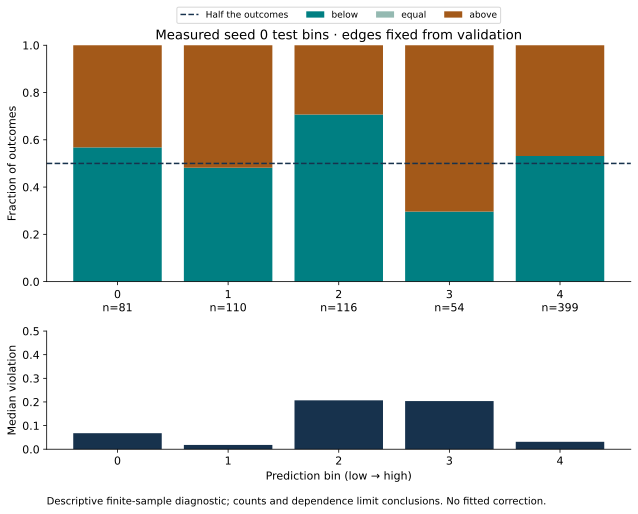
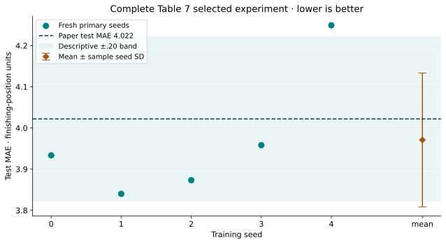

Year 4 · Quarter 4 · Lesson 152
Regression portfolio: accurate predictions, honest calibration
1 · From a ranking score to a prediction in real units¶
Reading route. Define the target → trace the scalar prediction → calculate error → inspect median balance → export the entry.
Lesson 151 attached a classification result to a reproducible procedure. Its AUROC asked whether positive examples ranked above negative examples. That leaves a different question unanswered: how far is a numerical prediction from the outcome, and what kind of prediction does the loss ask for?
Our second portfolio entry predicts a driver's average finishing position over the next 60 days. A lower MAE is better. The tangible win is an entry whose metric, loss, calibration diagnostic and evidence all describe the same object. This supports the mission: make a defensible relational-learning claim with enough evidence for a skeptic to reproduce it.
Recall before reading: why does a driver need both an ID and a cutoff? Which split chooses a checkpoint? Why can five complete runs still leave historical identity unestablished? Revisit query contracts, the complete F1 pipeline, and regression metrics as needed; this lesson restates the essentials below.
2 · Define the numerical target before choosing the loss¶
A query is (driverId, cutoff). Its target is the arithmetic average of positionOrder for that driver in (cutoff, cutoff + 60 days]. The left endpoint is excluded and the right endpoint included. For finishes 2 and 6, the target is 4. This average over races is the observed label. It does not dictate which statistic of uncertain future labels our model should predict.
The released task has 7,453 training, 499 validation and 760 test queries. A relational entity graph has a node for each database row and edges for foreign-key links. A driver may therefore appear in many queries with different legal histories. We align every prediction by the complete query key. RelBench task definition
Scope check. Label rows require future participation. This is the released benchmark population, not a past-only operational eligibility rule. Missing historical arrival records mean an event-time audit cannot establish when every feature first became available. The released preprocessing fits statistics through the database test cutoff; it is not train-only preprocessing.
Read the diagram. A vector is a list of numbers. A root is the driver being predicted; its head maps the final vector to one number. GraphSAGE combines a row’s own representation with its neighbors’ representations. A Frame ResNet is the table-feature encoder, with shortcut connections that add an earlier representation to a later transformation. MLP means a feed-forward neural network. Shapes such as [batch,128] mean one 128-number vector per query in the batch.
Model architecture. Table-specific encoders turn mixed numerical, categorical, text and timestamp columns into 128-coordinate vectors. Relative-time encodings express a dated row's age relative to its owning query. Two typed GraphSAGE layers collect legal context. Each relation sums neighboring vectors, applies learned transformations, and relation outputs are summed before normalization and activation. The root driver's vector reaches a scalar regression head. There is no classification sigmoid.


The visible notebook includes the actual row encoders, graph construction, temporal encoding, message passing, head and trainer. A fanout caps the neighbors sampled at a hop: here 128 then 64. An epoch is one complete pass over training queries. Adam is the adaptive gradient optimizer that updates learned weights; its learning rate controls the step scale. Training compares raw predictions to labels, while validation chooses which saved weights to retain. During training, L1 loss compares the raw scalar prediction with its target. During evaluation, the released implementation clips predictions to the training labels' 2nd and 98th percentiles. Those bounds are fixed from training labels. We preserve this choice for reproduction and diagnose the final clipped predictions. Pinned model
3 · Compute error without changing the question¶
In plain terms. MAE treats each unit of error equally. RMSE makes large misses count more heavily. Neither number is a probability or a percentage.
Let p be a prediction, y its target and n the number of queries. MAE is sum(abs(p-y))/n. RMSE is sqrt(sum((p-y)^2)/n). Both have the target's units: finishing-position units here. Bias, defined here as mean(p-y), retains direction: positive means predicting worse finishing positions on average. Opposing errors can cancel in bias, so zero bias does not imply accuracy.
Worked example. Targets [2,5] and predictions [3,3] produce errors [1,-2]. MAE is (1+2)/2 = 1.5; RMSE is sqrt((1+4)/2) ≈ 1.581; bias is -0.5. Reversing prediction records must not alter those values when their query keys are preserved.
Lab task 1 — keyed_metrics. Join complete unique key sets, reject duplicates, missing rows and nonfinite values, then compute the three metrics. Your function scores all saved author predictions and your own fresh runs. The CHECK includes the same driver at two cutoffs, so joining only by driver cannot pass.


Why the median appears. Hold the inputs fixed and imagine future labels [0,1,1,9]. Predicting 1 gives MAE 2.25; predicting their mean 2.75 gives MAE 3.125. Moving the prediction slightly upward increases the distance to every smaller outcome and decreases the distance to every larger outcome. Absolute error is minimized when neither side contains more than half the probability: a conditional median. Squared error instead balances the sum of signed distances, producing a conditional mean. “Conditional” means among outcomes possible for the same available information.
The neural network has finite data and capacity, and clipping can alter its output. L1 training therefore targets a conditional median; it does not prove the trained model found one. RMSE is a secondary diagnostic here. It never selects the checkpoint or changes our primary MAE comparison. Regression calibration and target functionals
4 · Check median balance without mistaking ties for failure¶
In plain terms. For a median prediction, no more than half the outcomes should lie strictly below it, and no more than half strictly above it. Outcomes exactly equal to the prediction count as ties.
Worked example. For [0,1,1,9] predicted as [1,1,1,1], the fractions below/equal/above are .25/.50/.25. The median inequalities hold even though the fraction at or below is .75, not .50. The mean residual mean(y-p) is 1.75; demanding zero mean residual would ask this L1 model to target a different quantity. Notice that residual y-p has the opposite sign to our reported bias p-y.
We group predictions into bins to inspect different prediction ranges. Each seed's final validation predictions define unique 20th/40th/60th/80th percentile edges. We freeze those edges before making test diagnostics. A prediction equal to an edge enters the bin on its right. Duplicate edges are collapsed; empty bins remain visible. Test labels never choose the bins or a correction.
For each occupied bin, report its count, strict-below fraction, tie fraction and strict-above fraction. Our descriptive median violation is max(0, below - .5, above - .5). Zero says these two empirical inequalities hold for that bin. It does not prove conditional calibration: grouping can hide local errors, finite samples fluctuate, and repeated driver queries are dependent. These plots carry counts, not unjustified independent-observation confidence intervals.
Lab task 2 — median_diagnostics. Implement fixed-edge assignment and the tie-aware fractions. Preserve an empty bin as n=0 with undefined statistics, rather than reporting a reassuring zero. Checks distinguish a skewed but median-balanced sample from a genuinely unbalanced one.


Read the measured plot. In seed 0's third bin (index 2), 82 of 116 outcomes fall strictly below their prediction: 82/116 ≈ .707, so the descriptive violation is .207. In the next bin, 38 of 54 lie strictly above, giving .704 and violation .204. The opposing directions are why one overall bias can hide local imbalance. These are observations, not significance tests; no test-driven model change follows.
This is a diagnostic extension to the published experiment, not a published calibration result. We do not fit a calibration correction, search new losses, or change the reproduction after inspecting test outcomes. The existing classification reliability curve from Lesson 8 compares probabilities with event frequencies; it cannot be reused unchanged for a scalar median.
5 · Run the named experiment, then report every seed¶
Held fixed: source commit, archive hashes, full query populations, architecture, preprocessing, ten epochs, Adam learning rate .005, batch 512, fanouts [128,64], L1 loss and train-derived clipping. Varied: initialization and sampling seeds 0–4. Measured: validation/test MAE, secondary RMSE, complete traces and diagnostics. The first strict validation-MAE improvement chooses the checkpoint. A tied later epoch does not replace it. Final validation uses new sampled neighborhoods, so preserve both selection MAE and final validation MAE.
Our primary source is RelBench v1, Table 7 and Appendix B.2. Read the F1 row and the architecture/training description before opening the results. The published test target is 4.022 ± 0.119 MAE; our frozen descriptive mean tolerance is ±0.20. The five fresh seeds report their mean and sample standard deviation, which divides squared deviations by n-1. Seed variation does not measure uncertainty across new databases or future seasons.
| Seed | Selected epoch | Selection MAE | Final val MAE | Test MAE | Test RMSE | Test bias |
|---|---|---|---|---|---|---|
| 0 | 9 | 3.205062 | 3.207255 | 3.933465 | 4.723830 | +0.502623 |
| 1 | 9 | 3.108677 | 3.110727 | 3.840081 | 4.704185 | +0.285210 |
| 2 | 10 | 3.239623 | 3.240849 | 3.873139 | 4.724245 | +0.042989 |
| 3 | 10 | 3.189180 | 3.185877 | 3.958161 | 4.861776 | +0.784117 |
| 4 | 7 | 3.159506 | 3.156182 | 4.249352 | 5.190039 | +1.525781 |
Five fresh fits: validation MAE 3.180178 ± 0.049613; test MAE 3.970840 ± 0.162612; test RMSE 4.840815 ± 0.205145. Mean ± sample seed SD, finishing-position units. Test mean: CLOSE under the frozen ±0.20 descriptive rule. These are new runs, not earlier-lesson scores.


Lab task 3 — portfolio_summary. Require exactly the five planned seeds and ten completed epochs each. Summarize MAE and RMSE; separate the score-closeness flag from historical identity and learner mastery. A missing or failed seed is not silently dropped.
All 8,712 labels were independently reconstructed from raw result rows. All 6,295 primary predictions were aligned to the archive and independently rescored. Every training/evaluation batch was audited: 403,895 query occurrences, zero owner-cutoff violations. Original-model held-out output comparisons passed, maximum discrepancy 3.81e-06.
First-backward nonfinite-gradient counts by seed: {'0': 640, '1': 640, '2': 640, '3': 640, '4': 640}. We retained the released computation. Exact source structure and a small local neural gradient/update check passed; they do not certify healthy optimization on real data.
Primary measured worker-body cost estimate USD 0.059556 excludes unitemized overhead. Current reservations plus the USD3 overhead allowance total USD 5.437776 under the aggregate USD10 cap. This is a conservative resource allowance, not an itemized invoice. Evidence · Budget ledger.
The portable full GPU gate also executed 23 code cells and five additional ten-epoch fits, independently rescoring 6295 predictions in an isolated pinned runtime. Those runs are separate from the primary mean. Live Colab and deployment remain NOT_CHECKED.
Scope check. This F1 test population has appeared in earlier lessons. Fresh execution does not create a new holdout. A close score does not establish historical run identity or statistical equivalence. No fresh manual-feature baseline is trained here; we cannot conclude from this entry alone that RDL beats manual feature engineering. Whole-paper reproduction remains NOT_RUN.
6 · Export portfolio entry 2 and defend it¶
Open the student notebook, prepared notebook, reference, protocol, and entry template.
The default notebook independently scores a self-contained author evidence packet. Its live learner functions produce l152-portfolio-entry.json. The separate full GPU gate downloads verified archives, constructs fresh graphs and trains all five seeds from the visible implementation, producing an entry labeled OWN_FRESH_RUN. CPU author-evidence auditing does not become fresh training merely because it runs in your notebook.
EXIT. Export the entry and write 250–400 words defending: the query population; why MAE and L1 belong together; why ties change a median check; how validation fixes selection and diagnostic bins; and what this entry does not establish. Explain one measured bin with its count and propose a falsifiable follow-up. Ask the teaching agent about any unclear step and submit your defense for review.
The review rubric awards 0–2 points each for task/units, loss/metric alignment, calibration reasoning, evidence integrity and bounded claims. Readiness requires at least 8/10 with no zero. Author execution leaves PENDING_WRITTEN_DEFENSE.
Spaced return. Tomorrow, reconstruct the tie example without looking. In one week, explain how MAE can look good while some prediction ranges have unbalanced errors. Lesson 153 adds recommendation/ranking; Lesson 154 will compare portfolio entries without averaging incompatible raw metric units.